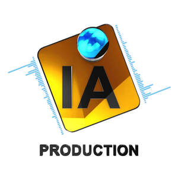

Trade Mark Journal No.2025/048 28 November 2025
UK00004293886 13 November 2025 (41)

- Class 41
- Audio and video recording services; Production of video and audio recordings; Audio, film, video and television recording services; Audio recording and production; Editing of video recordings; Video recording services; Production of sound and video recordings; Editing of audio recordings; Audio recording services; Production of video recordings; Audio and video production, and photography; Rental of sound and video recording apparatus; Audio recording studio services; Audio, video and multimedia production, and photography; Rental of sound and video recordings; Production of audio recordings; Providing audio or video studios; Entertainment services for sharing audio and video recordings; Audio and video editing services; Sound recording and video entertainment services; Production of educational sound and video recordings; Production of video tapes and video discs; Rental of video recordings; Audio recording and production services; Production of video and/or sound recordings; Hire of video recordings; Providing audio or video studio services; Rental of audio recordings; Video tape editing; Recording of music; Music recording; Rental of apparatus for the recording of video signals; Entertainment services for matching users with audio and video recordings; Recording, film, video and television studio services; Rental of apparatus for the recording of audio signals; Video tape production; Production of audio master recordings; Rental of audio tapes bearing recorded music; Production of video cassettes; Exhibition of video film sound tracks; Studio services for the recording of videos; Recording studio services for videos; Video and audio rental services; Services for the showing of video recordings; Provision of video recording studio services; Audio production; Video editing; Rental of pre recorded video tapes; Video tape film production; Video taping; Digital video, audio and multimedia entertainment publishing services; Production of pre-recorded video films; Rental of video cassette recorders; Recorders (Rental of video cassette -); Provision of video recording studio facilities; Audio tape production services; Rental of audio tapes; Video production; Sound recording studio services; Rental of video tapes; Rental of video cassette tapes.
IA Production Ltd